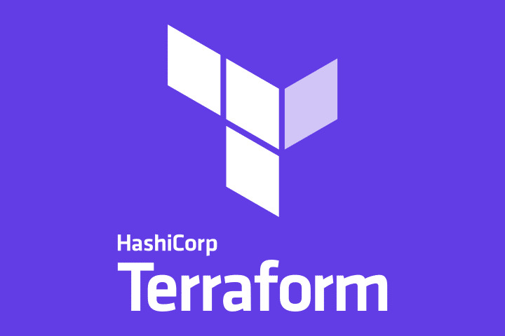
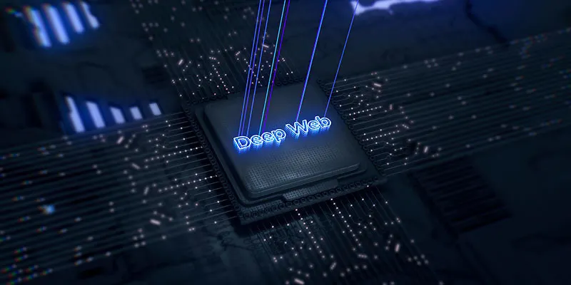
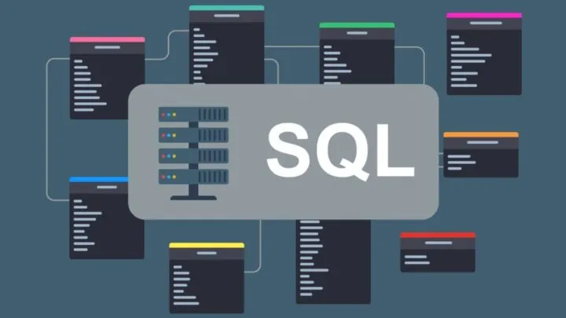

Ciberseguridad
Que no te estafen durante la declaración de la Renta
Como cada año por estas fechas, los contribuyentes tienen que rendir cuentas. Te contamos cómo detectar campañas fraudulentas y protegerte.
Leer más
Explora artículos, guías y novedades sobre ciberseguridad, inteligencia artificial, transformación digital y formación especializada. Mantente al día con las mejores prácticas y consejos para proteger tu negocio y potenciar tu carrera.
Toda nuestra biblioteca de artículos sobre ciberseguridad, hacking, desarrollo y transformación digital.
Como cada año por estas fechas, los contribuyentes tienen que rendir cuentas. Te contamos cómo detectar campañas fraudulentas y protegerte.
Leer más Ciberseguridad
Ciberseguridad
Una visión práctica del panorama actual, con claves para entender mejor los riesgos, el contexto técnico y las decisiones que importan.
Leer más
DesarrolloBuenas prácticas para gestionar infraestructura como código con más control, trazabilidad y menos sorpresas en producción.
Leer más Digital
Digital
Un enfoque práctico para modernizar entornos industriales, reducir la superficie de ataque y mejorar la resiliencia operativa.
Leer más Digital
Digital
Aprende a simular servicios de AWS en local con LocalStack para desarrollar y probar tus aplicaciones cloud sin costes ni dependencias externas.
Leer más Digital
Digital
Reflexión sobre la gestión del tiempo en el teletrabajo y cómo aplicar metodologías ágiles para mejorar la productividad sin perder el equilibrio personal.
Leer más Ciberseguridad
Ciberseguridad
Una explicación accesible de una de las vulnerabilidades más críticas de los últimos años: qué es Log4Shell, cómo funciona y cómo protegerse.
Leer más Ciberseguridad
Ciberseguridad
Técnicas y herramientas para detectar y neutralizar bots maliciosos en redes y aplicaciones web antes de que causen daño.
Leer másDescubre el programa de máster en ciberseguridad desarrollado junto a la Universidad CEU para formar a los profesionales que la industria necesita.
Leer más Ciberseguridad
Ciberseguridad
Cómo los atacantes explotan el sistema de importación de Python para ejecutar código malicioso suplantando librerías legítimas.
Leer másIntroducción a las vulnerabilidades de ejecución remota de código: cómo funcionan, cómo se explotan y cómo se mitigan.
Leer más Ciberseguridad
Ciberseguridad
Qué son los Named Pipes en Windows, cómo los utilizan los atacantes para comunicaciones encubiertas y movimiento lateral en redes corporativas.
Leer más.webp) Ciberseguridad
Ciberseguridad
Aprende cómo funciona la vulnerabilidad Local File Inclusion, cómo se explota para leer archivos del servidor y cómo prevenirla en tus aplicaciones.
Leer másLa primera fase de cualquier auditoría de seguridad: cómo recopilar información pública sobre un objetivo de forma sistemática y efectiva.
Leer más Ciberseguridad
Ciberseguridad
Cómo los atacantes manipulan a las personas para obtener acceso a sistemas o información sensible, y qué medidas tomar para protegerse.
Leer más
CiberseguridadQué hay realmente en la Deep Web y la Dark Web, cómo funcionan las redes anónimas y qué riesgos suponen para usuarios y organizaciones.
Leer másCómo los motores de búsqueda especializados como Shodan permiten descubrir dispositivos IoT expuestos y qué implica esto para la seguridad corporativa.
Leer másCómo usar Kalitorify para redirigir todo el tráfico de Kali Linux a través de la red Tor y aumentar el anonimato en tus auditorías.
Leer más Ciberseguridad
Ciberseguridad
Una guía sobre Spiderfoot, la herramienta de OSINT automatizada para recopilar inteligencia sobre dominios, IPs, emails y mucho más.
Leer más Footprinting
Footprinting
El uso inteligente de los operadores de búsqueda de Google para encontrar vulnerabilidades, fugas de información y vectores de ataque en auditorías.
Leer más
Iniciación al HackingAprende a usar SQLMap para detectar y explotar vulnerabilidades de inyección SQL en bases de datos, y por qué es esencial en cualquier auditoría web.
Leer másCómo aprovechar los scripts NSE de NMAP para ir mucho más allá del análisis de puertos y adaptarlos a las necesidades de cada auditoría.
Leer más Ingeniería Social
Ingeniería Social
Por qué la seguridad debe integrarse desde el inicio de cualquier proyecto y cómo el análisis de riesgos ayuda a prepararse ante lo imprevisto.
Leer más Desarrollo Web
Desarrollo Web
Guía completa sobre los lifecycle hooks de Angular: qué ocurre cuando se crea un componente y cómo aprovechar cada evento del ciclo de vida.
Leer másCómo usar las particularidades del estándar Unicode para realizar ataques de phishing, inyecciones SQL, bypass de WAF y mucho más en Red Team.
Leer más